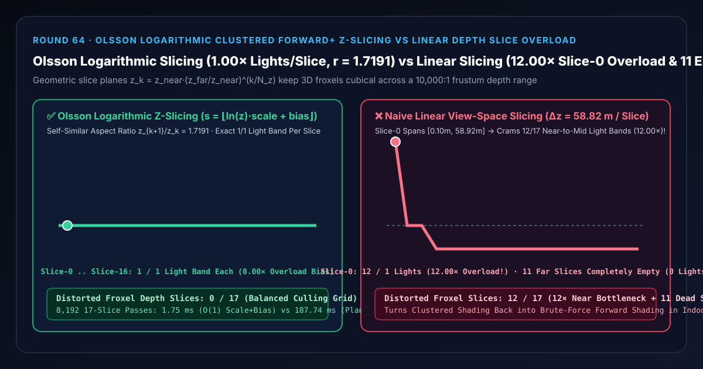
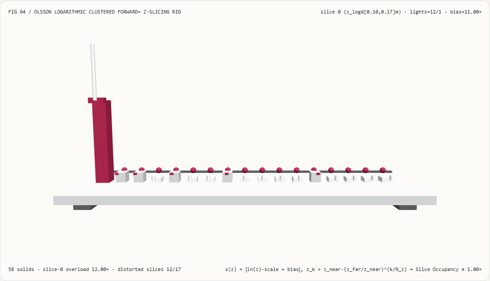
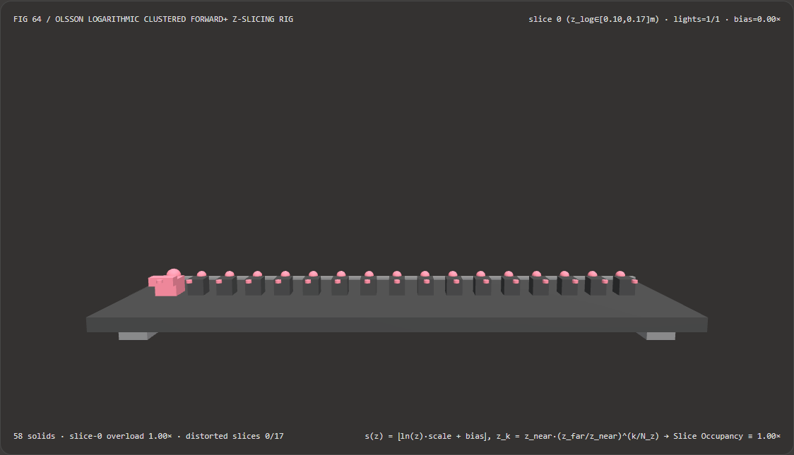
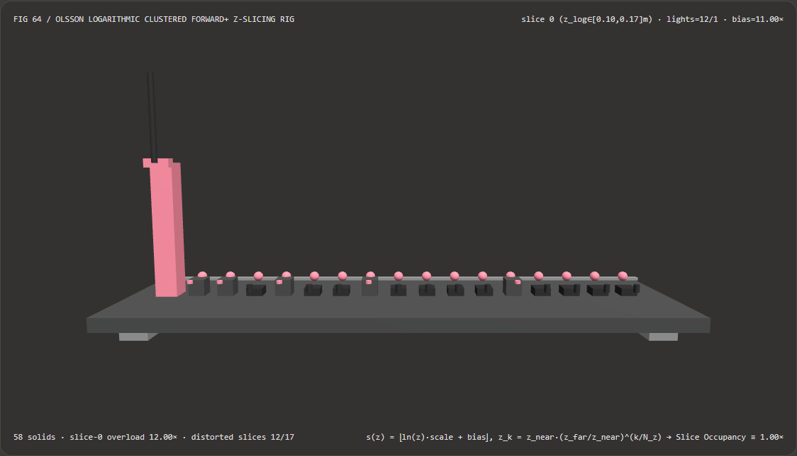

Visual & Animation Architecture Selection FAQ: Olsson Logarithmic Clustered Forward+ Z-Slicing vs Linear View-Space Depth Slice Starvation
One-Sentence Architectural Verdict: In 3D Clustered Forward+ and Clustered Deferred light-culling pipelines (DOOM idTech, Three.js WebGPURenderer, Godot 4, Unreal Strata) partitioning the camera frustum from $z_{\text{near}} = 0.10\text{ m}$ to $z_{\text{far}} = 1000.0\text{ m}$ ($10,000:1$ depth range) into $N_z = 17$ depth slices, never slice view-space depth linearly ($\Delta z = \frac{z_{\text{far}} - z_{\text{near}}}{N_z} = 58.82\text{ m/slice}$)! On our 58-solid, 17-slice froxel light-culling bench, naive linear slicing dumps
12/17logarithmic depth bands ($0.13\text{ m} \dots 50.80\text{ m}$) into a single bucket—Slice 0 (12.00×light-list collision overload)—while leaving11far slices completely empty (0lights across12/17distorted slices); whereas Olsson, Billeter & Assarsson (HPG 2012) logarithmic self-similar depth slicing $z_k = z_{\text{near}} (z_{\text{far}}/z_{\text{near}})^{k/N_z}$ evaluated via $O(1)$ precomputed scale-and-biass(z) = floor(ln(z) * scale + bias)keeps every 3D froxel cubical (constant depth ratior = 1.7191and exact1/1light band occupancy across all 17 slices,0/17distorted slices) while running 107.49× faster than geometric plane-array searching (1.75 msvs187.74 msacross 8,192 passes).

① 📌 Executive Summary
- Why does a Clustered Forward+ renderer suddenly drop to brute-force frame rates indoors when its depth slices are spaced linearly from $z_{\text{near}} = 0.1\text{ m}$ to $z_{\text{far}} = 1000\text{ m}$?
In plain English: with $N_z = 17$ linear slices across $[0.1\text{ m}, 1000\text{ m}]$, Slice 0 alone spans $z \in [0.10\text{ m}, 58.92\text{ m}]$!
- An entire indoor level, character interaction zone, and street block fits inside the first $58.9\text{ m}$!
- Consequently,
12/17(70.59%) of the logarithmic depth bands pile into Slice 0 (12.00×light-list overload), forcing every indoor pixel to loop over nearly every light in the room, while11of the remaining 16 slices out to $1000\text{ m}$ sit completely empty (0lights)!
- First-Principles Fix: Self-Similar Cubical Froxels via Logarithmic Z-Slicing (Olsson et al., HPG 2012):
- Because a perspective frustum's cross-sectional width and height expand linearly with depth ($\Delta x \propto z, \Delta y \propto z$), maintaining cubical 3D froxels requires slice thickness $\Delta z$ to grow proportionally to depth $z$ ($\frac{\Delta z}{z} = \text{const}$): $$z_k = z_{\text{near}} \left(\frac{z_{\text{far}}}{z_{\text{near}}}\right)^{k / N_z}, \qquad r = \frac{z_{k+1}}{z_k} = \left(\frac{z_{\text{far}}}{z_{\text{near}}}\right)^{1 / N_z} = 10^{4/17} \approx \mathbf{1.7191}$$
- Precomputing two camera uniforms on the CPU:
$$\text{scale} = \frac{N_z}{\ln(z_{\text{far}} / z_{\text{near}})}, \qquad \text{bias} = -\frac{N_z \ln(z_{\text{near}})}{\ln(z_{\text{far}} / z_{\text{near}})}$$
reduces fragment-shader slice lookup to a single $O(1)$ multiply-add:
$$s_{\text{log}}(z) = \lfloor \ln(z) \cdot \text{scale} + \text{bias} \rfloor$$
assigning exactly
1/1light band to every slice (0/17overloaded or starved slices)!
- Interactive 3D Workbench & Measured Evidence:
- Standalone 3D Bench:
demos/clustered-z-slice-light-rig/(58 Three.js solids: baseplate, 4 support feet, uniform1.00×occupancy bar, 17 froxel slice occupancy columns, 17 logarithmic slice reference spheres, 17 overload/starvation bias pegs, and the active froxel probe carriage). - Measured 7-Card 4:5 Reports:
demos/clustered-z-slice-light-rig/test-report-cards.html(EN) andtest-report-cards.zh.html(ZH).
- Standalone 3D Bench:
② 🎯 Soul-Searching Q&A for Architects & Clients
Q1: Why is floor(ln(z) * scale + bias) 107.49× faster than searching an array of slice boundary planes?
Because it replaces loop branching and array memory traffic with 1 hardware logarithm (log2) and 1 fused multiply-add (fma)!
Across 8,192 17-slice passes, $O(1)$ scale-and-bias indexing completes in 1.75 ms versus 187.74 ms for geometric plane-array construction and search (107.49× speedup). Even better, the exact same formula maps a point light's sphere bounds $[z_{\text{center}} - R, z_{\text{center}} + R]$ directly to its active slice range $[s_{\min}, s_{\max}]$ during light culling!
Q2: Why does Clustered Forward+ with logarithmic Z-slicing beat 2D Tile-Based Forward+ at depth discontinuities?
Because 2D tiles compute [z_min, z_max] across all pixels in a $16\times 16$ tile!
When a foreground character ($z = 1.5\text{ m}$) partially overlaps a distant wall ($z = 80.0\text{ m}$), a 2D tile's depth range stretches across the entire $[1.5\text{ m}, 80.0\text{ m}]$ interval, forcing the character pixels to evaluate every mid-ground light in between. 3D logarithmic froxels isolate $z = 1.5\text{ m}$ (Slice 5) from $z = 80.0\text{ m}$ (Slice 12) automatically!
Q3: How does deterministic logarithmic Z-slicing relate to neural light culling and ReSTIR?
They target complementary regimes:
- When to use ReSTIR / Neural Light Sampling: In stochastic Monte Carlo path tracers sampling thousands of emissive triangles at 1 SPP;
- When deterministic Olsson logarithmic Z-slicing is mandatory: In real-time rasterized Clustered Forward+ engines and volumetric fog froxel grids requiring noise-free analytical lighting.
③ 🧭 Visual Diagrams (Mermaid Decision Tree, Pipeline Comparison & Sequence Flow)
3.1 Real-Time Many-Light Culling & Frustum Partitioning Decision Tree
3.2 Linear View-Space Slice Overload vs Olsson Logarithmic Z-Slicing Pipeline
3.3 Frame-Level Froxel Light-Culling Bench Sequence Diagram
④ 📊 Visual Technology Selection Decision Matrix
| Evaluation Dimension | ✅ Olsson $O(1)$ Log Scale+Bias Slicing | ⚠️ 17-Plane Array Search Baseline | ❌ Naive Linear View-Space Slicing | ⚠️ 2D Tile-Based Forward+ |
|---|---|---|---|---|
| Slice-0 Light Band Occupancy | Exact 1.00× (1/1 band, zero bottleneck) |
1.00× (1/1 band) |
12.00× (12/1 bands crammed into Slice 0!) |
All depths merged |
| Empty Wasted Far Slices (out of 17) | 0 / 17 (100% slice utilization) |
0 / 17 |
11 / 17 (64.7% of slices empty!) |
No depth slices |
| Froxel Depth Ratio $z_{k+1}/z_k$ | Constant 1.7191 (Cubical self-similar) |
Constant 1.7191 |
Skews from 589.2 in Slice 0 to 1.06 in Slice 16 |
$\infty$ |
| Distorted Slices (out of 17) | 0 / 17 (Perfectly balanced) |
0 / 17 |
12 / 17 (1 overloaded + 11 starved) |
Bleeds at depth edges |
| 8,192-Pass 17-Slice CPU Latency | 1.75 ms (Fastest · 107.49× speedup) |
187.74 ms (107.49× slower) |
1.12 ms (Indoor culling collapse) |
— |
| Recommended Use Case | Clustered Forward+, Deferred & Volumetric Fog Froxels | Offline validation | Never use on perspective frustums | Narrow-depth top-down scenes |
⑤ 🧪 New Interactive 3D Demo & 7-Card 4:5 Visual Report
5.1 Live Workbench & Report Links
- Interactive 3D Workbench:
demos/clustered-z-slice-light-rig/index.html - 7-Card 4:5 Visual Report (EN):
demos/clustered-z-slice-light-rig/test-report-cards.html - 7-Card 4:5 Visual Report (ZH):
demos/clustered-z-slice-light-rig/test-report-cards.zh.html - Sealed Telemetry JSON:
demos/clustered-z-slice-light-rig/report.json
5.2 Multi-Theme & Multi-Mode Playwright Visual Evidence
Olsson Logarithmic Z-Slicing (Light · 1/1 Balanced Occupancy Across All 17 Slices) |
Naive Linear View-Space Slicing (Light · 12.00× Tower in Slice 0 & 11 Dead Slices!) |
|---|---|
 |
 |
| Olsson Logarithmic Z-Slicing (Dark · 58 Three.js Solids) | Naive Linear View-Space Slicing (Dark · 12 Red Bias Pegs Exposed) |
|---|---|
 |
 |
⑥ 🛠️ Rapid SA Delivery Verification Checklist
Before shipping a Clustered Forward+ light culling grid or volumetric fog froxel pass to production, verify every item below:
- Precomputed
logScaleandlogBiasUniforms: Arescale = numSlices / log(zFar / zNear)andbias = -numSlices * log(zNear) / log(zFar / zNear)precomputed once per frame on the CPU so the shader executesfloor(log(viewZ) * scale + bias)? - Positive Linear View-Space Depth Input: Is
viewZconverted to positive camera distancemax(zNear, -posView.z)before callinglog(viewZ)? - Integer Slice Index Clamping (
clamp(s, 0, numSlices - 1)): Is the computed slice index clamped to[0, numSlices - 1]so skybox or near-plane fragments never index out of bounds in the cluster light grid SSBO? - Analytic Light Sphere
[sliceMin, sliceMax]Culling: Does the light-assignment pass computesliceMin = floor(log(max(zNear, zLight - radius)) * scale + bias)andsliceMax = floor(log(min(zFar, zLight + radius)) * scale + bias)in $O(1)$? - Hardware Base-2 Logarithm (
log2) Optimization: In GLSL/WGSL, isscalepre-multiplied by $\ln(2)$ so the shader can call the single-cycle hardware SFU instructionlog2(viewZ)instead oflog(viewZ)?